Insights From Modeling Solar + Battery Systems for Off-grid Energy Access, Including Cooking
Over the last 30 years solar PV has made accelerating progress providing energy access in developing countries. The initial focus was household lighting, but it became clear that productive uses and rural industries like tea plantations were even more promising. Despite that progress, there are about 2 billion people still cooking using smoky biomass with substantial impacts on health, safety, and the environment. Cooking is by far the biggest energy challenge for people in Africa and other developing countries. It requires about ten times the energy of all their other household energy needs combined. Until recently, solar PV and batteries were too expensive to reasonably meet that demand. That has now changed. Not only can PV + battery systems be designed to meet cooking demands, but these larger systems improve the supply chain and financial viability of the small solar businesses that are crucial for expanded energy access.
The focus of this paper and the accompanying app is the approximately 700 million people who do not currently have any access to electricity. We show that solar + battery systems that meet all household’s energy needs, including cooking, can be deployed for as little as $500 (try it in the app). That cost compares favorably against the cost of a grid connection or a couple years’ supply of charcoal.
Several other useful insights are derived from the modeling we performed with the app. These include:
- The impact of climate
- The impact of latitude
- The trade-off between reliability and cost
- The value of simple forms of load management
Methodology
To keep it simple the app has the following assumptions.
- There is no backup generator. We assume that traditional cooking methods are still available when needed.
- This is intended for individual stand-alone systems and not for mini-grids. This assumes that the user can handle any load management themselves without the cost of meters, poles and wires and administrative costs.
- PV panels face the equator and are tilted at an angle equal to latitude.
- Output is derated by a temperature correction and a further 14% to account for various typical losses, per PVGIS.
- The battery is controlled to have a minimum state of charge of 10%, and a round trip efficiency of 95%.
- The demand is spread evenly within a daytime demand period and a separate nighttime demand period.
- Although we track how often the battery reaches its maximum state of charge, we don’t track the amount of excess energy available above the target load.
- We have a user-defined cost input for the inverter and other electronic controls, but don’t distinguish between AC and DC applications.
- We model the energy content of the battery in Wh’s but not its potential discharge rate in watts.
- We don’t model other energy loads a household may have and assume that any lighting and small electronic loads are small enough that a system that can provide even only a portion of the cooking load can handle the much smaller loads with 100% reliability.
- We do not currently have a front end with lists of electrical cooking appliances and energy requirements for typical meals.
The app is designed to quickly model a large range of both PV and battery sizes to evaluate the trade-off between cost and reliability. It uses plane-of-array solar data from PVGIS with user inputs for the $/watt for the PV and $/kWh for the battery. Those both scale linearly with the size of their respective components. A separate fixed cost is included for the inverter, controls, and miscellaneous costs.
The first output is a scatter plot of all of the modeled systems as a function of their reliability and cost as shown in Figure 1. The systems along the Pareto frontier are shown in green. These are systems for which there are no other systems that are both less expensive and more reliable. The steeply increasing slope of this graph shows quite clearly the extra costs associated with eliminating the last small amounts of unmet energy.
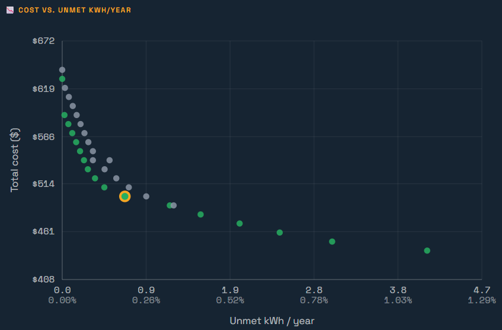
The data behind this graph is then presented in several tables. A report that can be opened in Word, hourly data that can be opened in Excel, and a histogram of unmet load per day can be downloaded for each modeled system. We modeled four locations, as shown below. The vast majority of unelectrified households are in tropical regions, but the results for mid-latitude regions are interesting in their own right.
| Dry | Rainy | |
|---|---|---|
| Tropical | Namibia | Gabon |
| Mid-latitude | Mongolia | Assam |
We analyzed three systems in Namibia and two systems in each of the other locations. For all locations we assumed a target daytime load of 500 watt-hours and a similar target nighttime load of 500 watt-hours. This should be sufficient for most households, especially using electric pressure cookers (EPCs). We also measured an energy consumption of 120 watt-hours for an EPC cooking 4 portions of rice. See a full list of assumptions in Appendix A.
Results
As can be seen in Figure 1, there is a wide range of costs depending on the tolerance for small percentages of unmet energy. In this example, some systems cost as little as $440, if the user can be flexible about their cooking load. What can also be seen from this graph is how much steeper the curve gets as you get close to 0 unmet energy. The actual choice among the options depends on user preferences. We identify a break point that is highlighted in the graph. At this point the cost is $500 and the unmet energy is 0.2% (0.7 kWh/year) of the annual load. From Figure 2 we can see the distribution of that unmet load. On most days it is less than 40 watt-hours and on only 1 day is it more than 160 watt-hours. The same information is presented in a calendar in Figure 3.
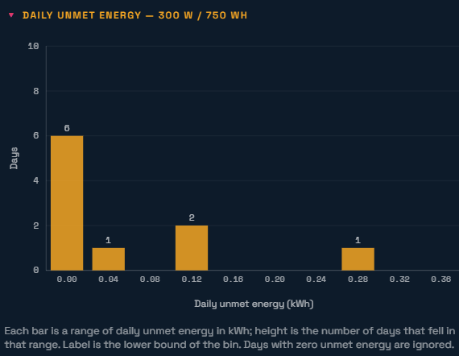
In contrast to these very low-cost systems, the cost of a system with zero unmet energy is $640. That is an extra $140 (a 28% increase) just to supply the last 0.7 kWh/year of energy.
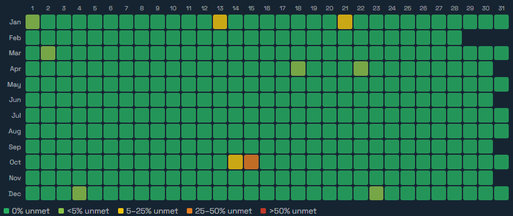
We performed the same analysis on all four locations. Those results are summarized in the following table.
| Location | Latitude | Climate | Unmet % | Unmet kWh | Cost (with load mgmt) | Cost (without) | % cost increase |
|---|---|---|---|---|---|---|---|
| Namibia | −17.9744 | Desert | 1.6% | 5.9 | $430 | $640 | 49% |
| Namibia | −17.9744 | Desert | 0.2% | 0.7 | $500 | $640 | 28% |
| Gabon | −0.2234 | Rainy | 0.2% | 0.6 | $690 | $810 | 17% |
| Mongolia | 45.5903 | Desert | 1.8% | 6.7 | $560 | $960 | 71% |
| Assam | 27.6973 | Rainy | 2.5% | 9.3 | $860 | $1,190 | 38% |
An obvious result is that rainy locations like Gabon and Assam require larger and more expensive systems. Load management for these systems consists simply of cooking less energy-intensive meals on very cloudy days, or potentially reverting to other cooking methods on the occasional days with the worst solar resource. On the other hand, load management is probably easier in a rainy location because firewood or other forms of biomass would be more readily available.
Another result that is fairly obvious with a little thought is that mid-latitude locations require more load management and have a higher cost premium without it. This is because of the reduced solar radiation in the winter, which is not a problem in tropical locations. A simple solution to this problem is the use of a backup generator, which would be practical for mini-grid applications and larger commercial or industrial applications, but is not practical for individual households and systems of these sizes.
Conclusion
This analysis shows quite clearly that individual solar home systems with batteries can provide all energy needs for most households, most importantly including their cooking loads. These systems can be provided at a cost that compares favorably to the cost of grid connections or charcoal purchases. The analysis also shows how beneficial small amounts of load management can be in reducing the cost of these systems. The variation in these results between locations can be easily analyzed with a simple model.
Appendix A — Assumptions
For over 30 years I’ve promoted solar PV as a way to provide energy access in developing countries. All that time I heard that the greatest energy need was for cooking, with 2 billion people still cooking using smoky biomass, often indoors, with substantial impacts on health, safety, and the environment. Until recently, PV was too expensive for this application. That is no longer true, as this simple app can show.
To keep it simple we have made the following assumptions.
- There is no backup generator. We assume that traditional cooking methods are still available when needed.
- This is intended for individual stand-alone systems and not for mini-grids. This assumes that the user can handle any load management themselves without the cost of meters, poles and wires and administrative costs.
- We assume a flat energy load during daylight hours and a separate flat load after sunset through the night.
- Although we only track how often the battery reaches its maximum state of charge, we don’t track the amount of excess energy available above the target load.
- We have a user-defined cost input for the inverter and other electronic controls, but don’t distinguish between AC and DC applications. We model the energy content of the battery in Wh’s but not its potential discharge rate in watts.
- We don’t model other energy loads a household may have and assume that any lighting and small electronic loads are small enough that a system that can provide even only a portion of the cooking load can handle the much smaller loads with 100% reliability.
- We would like to add a front end with lists of electrical cooking appliances and energy requirements for typical meals after we receive input from people with field experience.
The app demonstrates substantial cost savings if the user can manage their own loads by simply paying attention to the weather.
We hope it is self-explanatory and would love to hear about anything you find confusing or any suggested enhancements.
Appendix B — Cost vs. Reliability by System
The scatter plots behind the summary table — one per modeled system, grouped by location.
Namibia
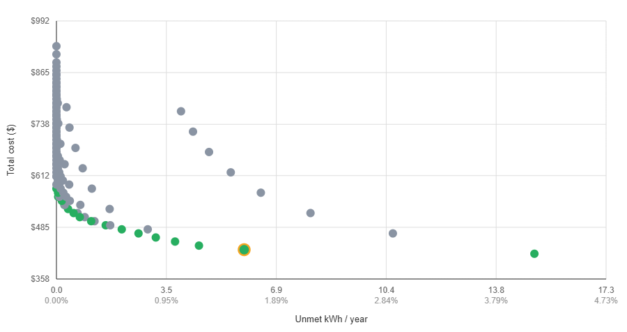
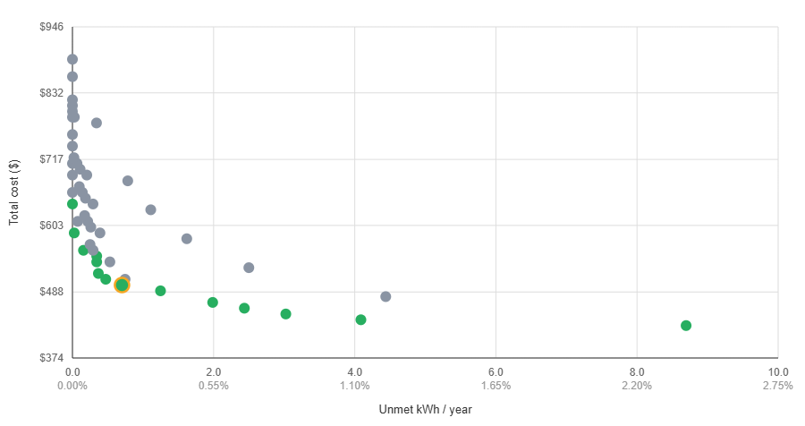
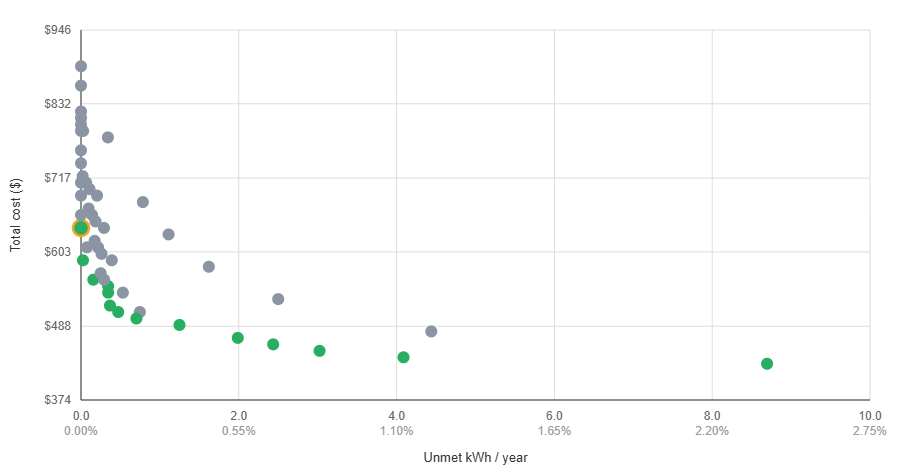
Gabon
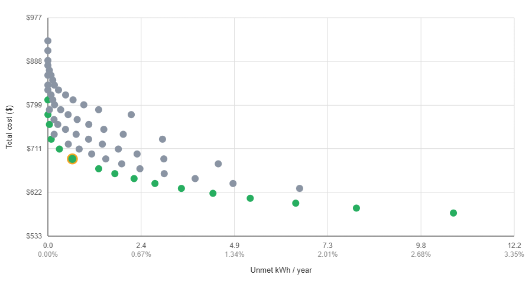
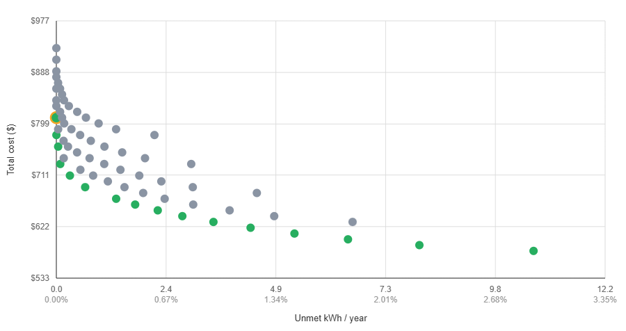
Mongolia
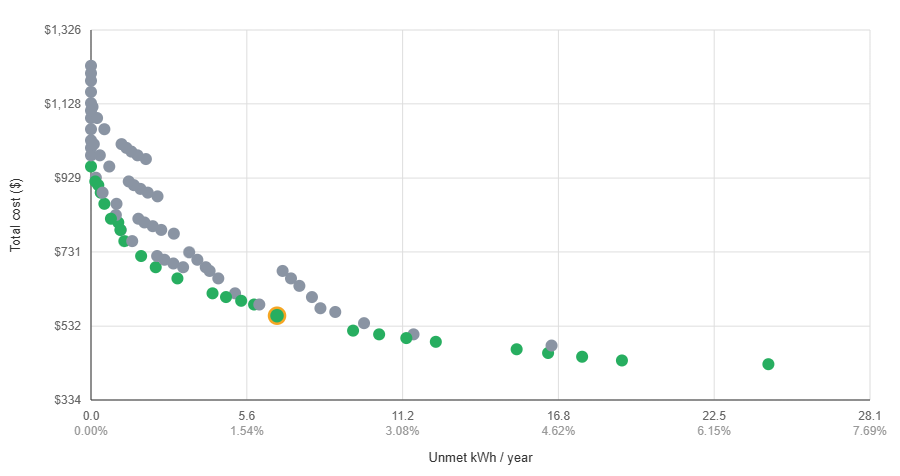
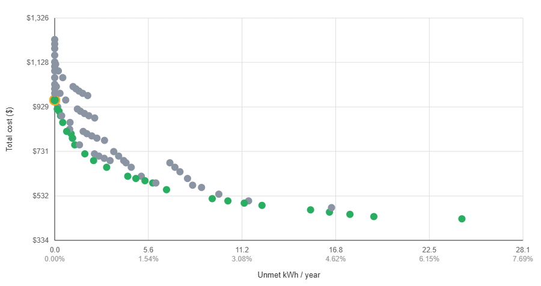
Assam
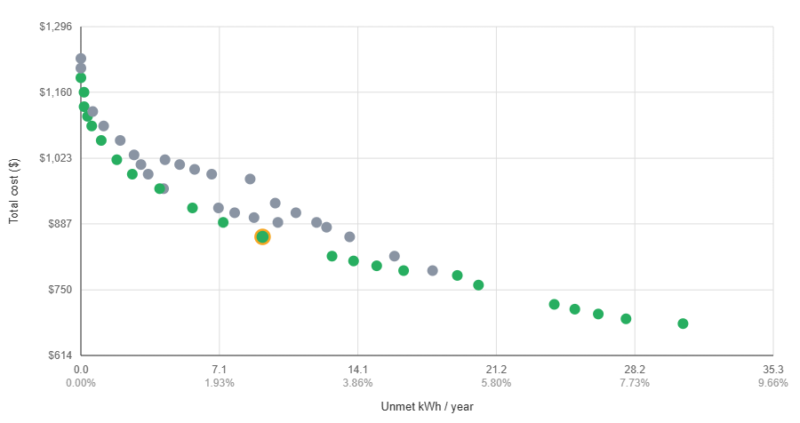
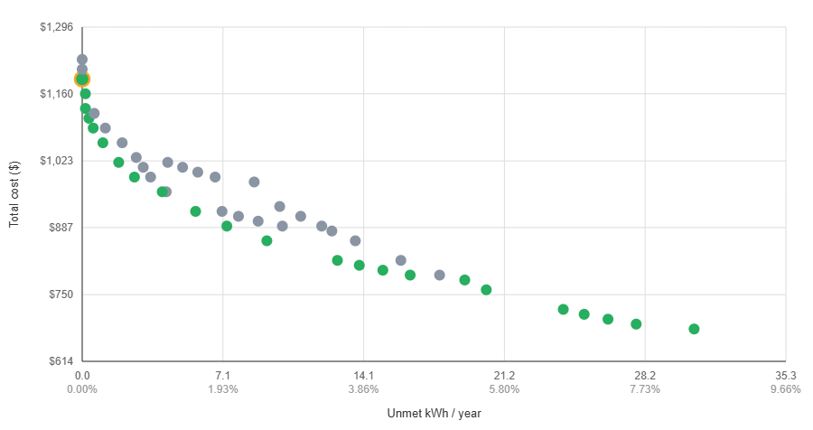